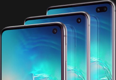
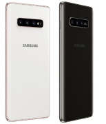

Еще больше возможностей
Новый дизайн
-
 Абсолютно новый Infinity-O экран — на передней стороне смартфона нет ничего, кроме огромного экрана и фронтальной камеры.
-
Смартфоны доступны в 4х стильных цветах: Перламутр, Аквамарин, Оникс и Цитрус (для S10e).
-
В моделях S10 и S10+ установлены защитные стекла нового поколения – Gorilla Glass 6.
-

Для любителей роскоши, модель S10+ будет выпускаться в керамическом корпусе черного и белого цветов.